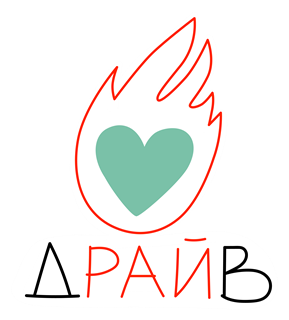
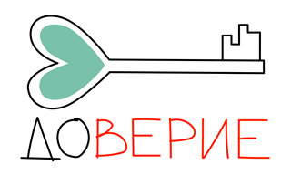
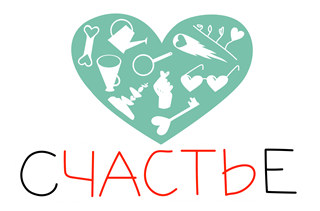
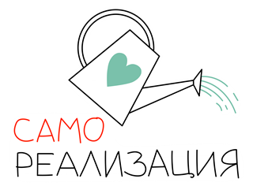
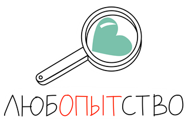
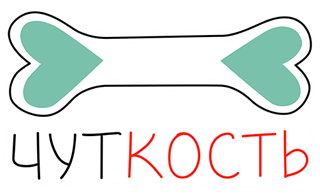
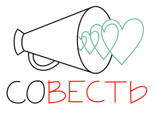
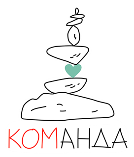

<!DOCTYPE html>
<html lang="ru">
<head>
<meta charset="UTF-8">
<meta name="viewport" content="width=device-width, initial-scale=1.0">
<title>iTeal Team</title>
<link rel="preconnect" href="https://fonts.googleapis.com">
<link rel="preconnect" href="https://fonts.gstatic.com" crossorigin>
<link href="https://fonts.googleapis.com/css2?family=Ubuntu:wght@500;700&family=Open+Sans:wght@400;600;700&display=swap" rel="stylesheet">
<script src="https://unpkg.com/lucide@latest"></script>
<link rel="stylesheet" href="shared.css">
<style>
.hero-intro{max-width:720px;margin:8px auto 0;text-align:center}
.hero-intro h1{font:700 30px/1.3 var(--font-heading);color:var(--it-teal-deep);margin:0 0 var(--space-2)}
.hero-intro p{color:var(--it-ink-soft);font-size:16px;line-height:1.7;margin:0}

.values-section{margin-top:var(--space-6)}
.values-section h2{text-align:center;font:700 22px var(--font-heading);color:var(--it-teal-deep);margin:0 0 var(--space-4)}
.values-grid{display:grid;grid-template-columns:repeat(auto-fit,minmax(210px,1fr));gap:var(--space-3)}
.value-card{background:var(--it-white);border-radius:var(--radius-soft);box-shadow:var(--shadow-sm);
  padding:var(--space-3);text-align:center;display:flex;flex-direction:column;align-items:center}
.value-card img{width:110px;height:110px;object-fit:contain;margin-bottom:var(--space-1)}
.value-card h3{font:700 17px var(--font-heading);color:var(--it-ink);margin:0 0 6px}
.value-card p{font-size:13.5px;color:var(--it-grey);line-height:1.5;margin:0}

.cta-section{margin-top:var(--space-6);margin-bottom:var(--space-4);
  display:flex;flex-wrap:wrap;justify-content:center;gap:var(--space-6) var(--space-4)}
.cta-block{display:flex;flex-direction:column;align-items:center;text-align:center;width:220px}
.cta-block h3{font:700 20px/1.3 var(--font-heading);color:var(--it-ink);margin:0}
.cta-arrow{width:64px;height:78px;margin:4px 0 -6px;color:var(--it-mint)}
.cta-block.flip .cta-arrow{transform:scaleX(-1)}
.cta-btn{display:inline-block;padding:15px 30px;border-radius:var(--radius-pill);
  background:var(--it-teal);color:#fff;font:700 16px var(--font-heading);text-decoration:none;
  transition:background-color 140ms ease-out;box-shadow:var(--shadow-sm)}
.cta-btn:hover{background:var(--state-hover)}
</style>
</head>
<body>
<div id="app"></div>
<script src="shared.js"></script>
<script>
(function () {
  "use strict";

  var app = document.getElementById("app");

  // Стартовая страница сознательно почти пустая — заполним позже. Анкету
  // ФИО/email здесь не спрашиваем: она появляется прямо на нужной странице
  // (тест талантов / тест на IQ), когда становится нужна, а не тут заранее.
  function render() {
    app.innerHTML = headerHtml(navHtml(null)) +
      '<div class="hero-intro"><h1>Привет!</h1>' +
      '<p>Мы в iTeal придерживаемся бирюзовых принципов, выстраиваем самоуправление, и в этом нам помогают инструменты спиральной динамики, холакратии, социократии, agile, scrum.</p></div>' +
      '<div class="values-section"><h2>Наши ценности</h2><div class="values-grid">' +
      '<div class="value-card"><h3>Драйв</h3><p>Проявляем положительный настрой, видим возможности в своих ошибках</p></div>' +
      '<div class="value-card"><h3>Доверие</h3><p>Проявляем открытость, доверяем себе и миру, проявляем уязвимость и не боимся просить о помощи</p></div>' +
      '<div class="value-card"><h3>Счастье</h3><p>Важна атмосфера открытости и заботы в Команде; есть чувство удовлетворения, когда желаемое совпадает с возможностями и с реальностью</p></div>' +
      '<div class="value-card"><h3>Самореализация</h3><p>Осознавание своих желаний, умений, навыков, зон для роста и обстоятельств; есть стремление проявляться и развиваться</p></div>' +
      '<div class="value-card"><h3>Любопытство</h3><p>Проявляем вовлечённость; бессознательное стремление к познанию; искренний интерес к тому как, что, зачем, почему, когда происходит</p></div>' +
      '<div class="value-card"><h3>Чуткость</h3><p>Проявляем заботу, поддержку и эмпатию</p></div>' +
      '<div class="value-card"><h3>Совесть</h3><p>Принимаем ответственность за себя и свой результат; оцениваем, что приемлемо и хорошо для себя, а что нет</p></div>' +
      '<div class="value-card"><h3>Команда</h3><p>Видим ценность в поддержке и взаимовыручки друг друга; проявляем доверие, чуткость, совесть, драйв, любопытство, самореализацию, поддержку и взаимопомощи.</p></div>' +
      '</div></div>' +
      '<div class="cta-section">' +
      '<div class="cta-block"><h3>Хочешь в команду?</h3><svg class="cta-arrow" viewBox="0 0 64 78" fill="none" xmlns="http://www.w3.org/2000/svg"><path d="M6 6C6 6 52 2 54 30C56 58 14 54 16 68" stroke="currentColor" stroke-width="3.5" stroke-linecap="round"/><path d="M4 58L16 68L27 57" stroke="currentColor" stroke-width="3.5" stroke-linecap="round" stroke-linejoin="round" fill="none"/></svg><a class="cta-btn" href="talents.html">Для кандидатов</a></div>' +
      '<div class="cta-block flip"><h3>Уже в команде?</h3><svg class="cta-arrow" viewBox="0 0 64 78" fill="none" xmlns="http://www.w3.org/2000/svg"><path d="M6 6C6 6 52 2 54 30C56 58 14 54 16 68" stroke="currentColor" stroke-width="3.5" stroke-linecap="round"/><path d="M4 58L16 68L27 57" stroke="currentColor" stroke-width="3.5" stroke-linecap="round" stroke-linejoin="round" fill="none"/></svg><a class="cta-btn" href="talent-gate.html">Для талантов</a></div>' +
      '</div>';
    bindNavDropdowns();
    if (window.lucide) lucide.createIcons();
  }

  render();
})();
</script>
</body>
</html>
